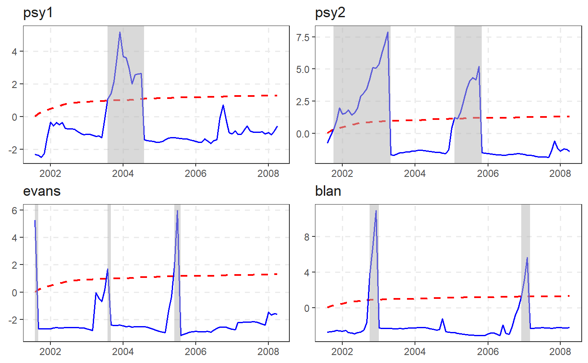
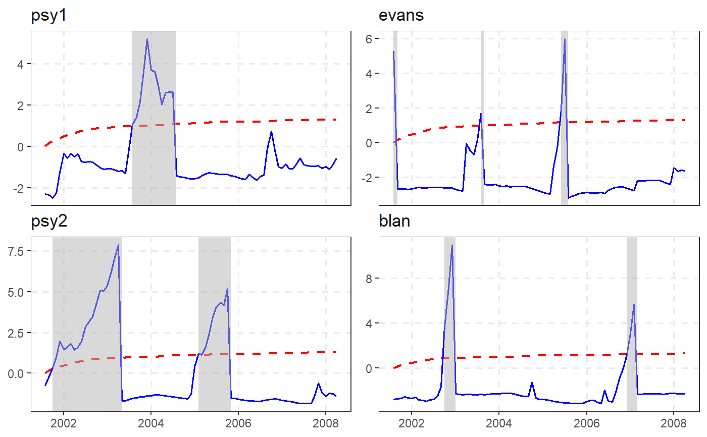
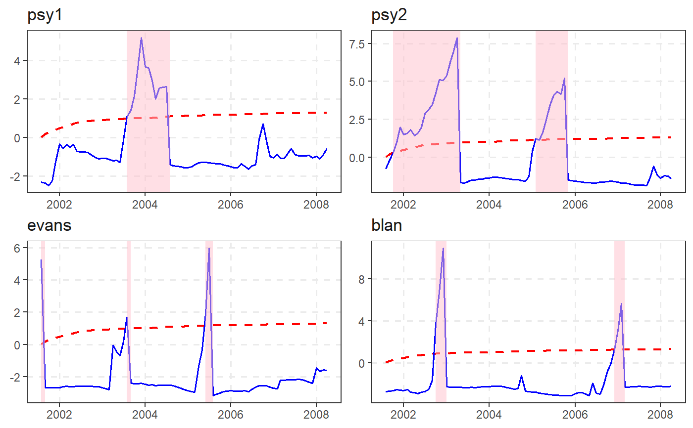
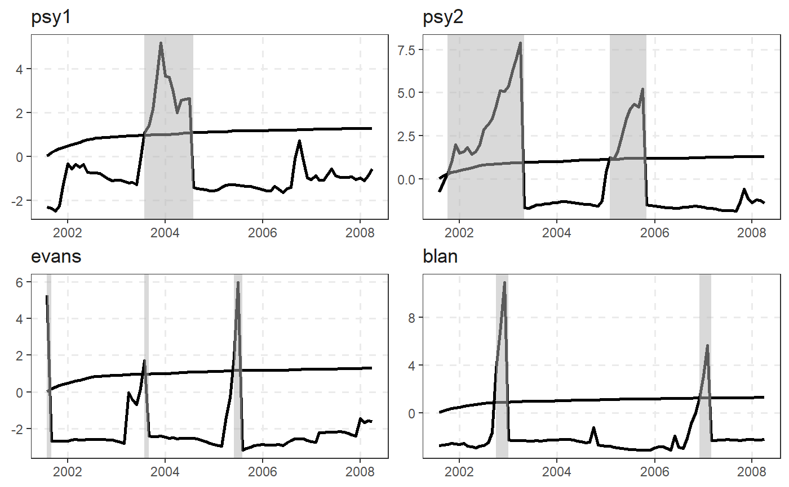
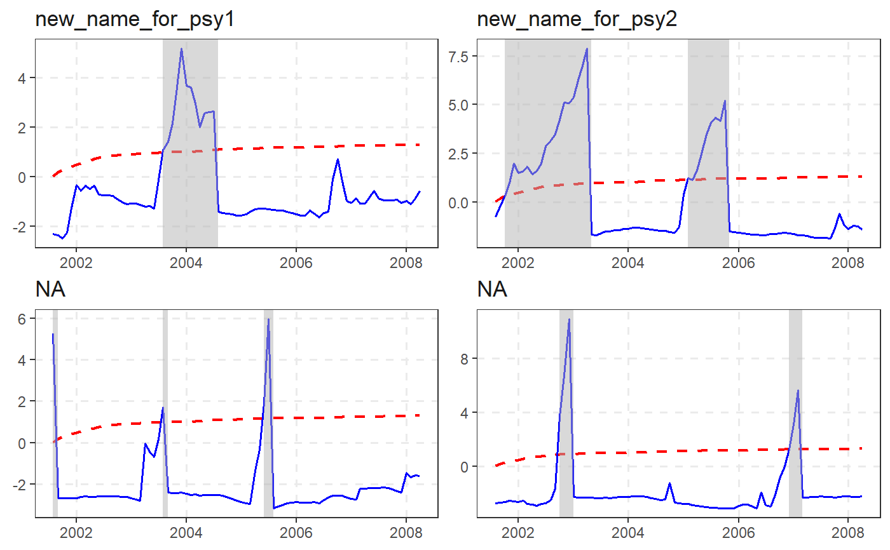
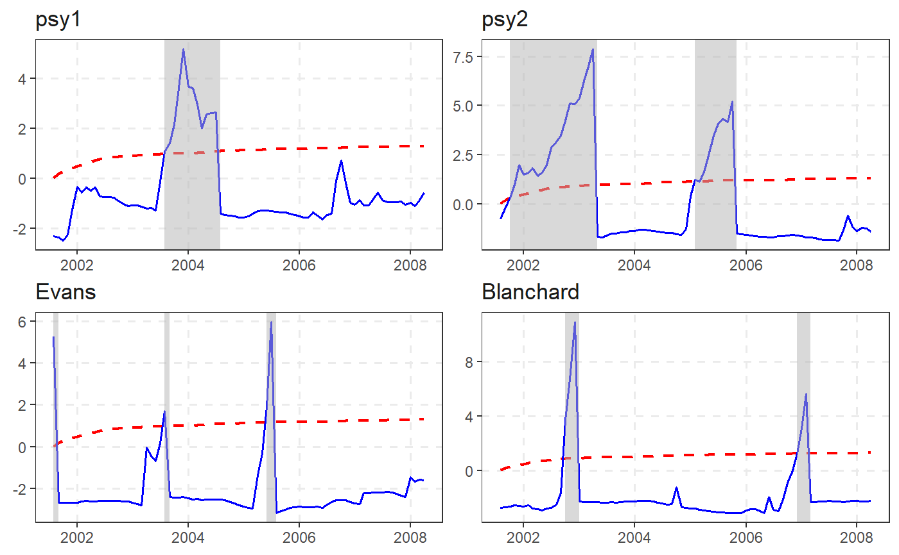
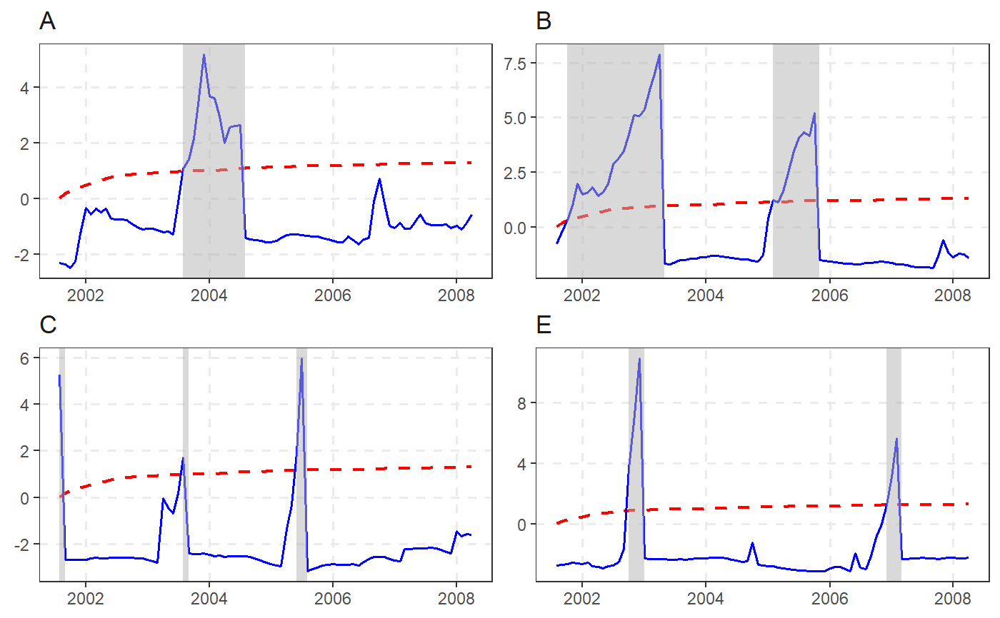
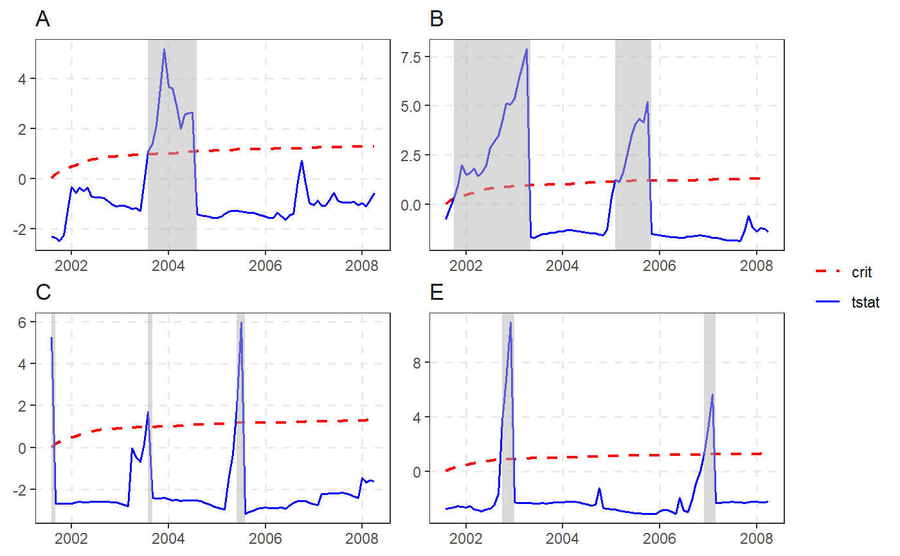

autoplot.radf_obj takes radf_obj and radf_cv and returns a faceted ggplot object.
shade is used as an input to shape_opt. shade modifies the
geom_rect layer that demarcates the exuberance periods.
# S3 method for radf_obj autoplot( object, cv = NULL, option = c("gsadf", "sadf"), min_duration = 0L, select_series = NULL, include_negative = FALSE, shade_opt = shade(), include = "DEPRECATED", select = "DEPRECATED", ... ) shade(fill = "grey70", opacity = 0.5, ...)
| object | An object of class |
|---|---|
| cv | An object of class |
| option | Whether to apply the "gsadf" or "sadf" methodology (default = "gsadf"). |
| min_duration | The minimum duration of an explosive period for it to be reported (default = 0). |
| select_series | A vector of column names or numbers specifying the series to be used in plotting. Note that the order of the series does not alter the order used in plotting. |
| include_negative | If TRUE, plot all variables regardless of rejecting the NULL at the 5 percent significance level. |
| shade_opt | Shading options, typically set using |
| include | Argument name is deprecated and substituted with |
| select | Argument name is deprecated and substituted with |
| ... | Further arguments passed to |
| fill | The shade color that indicates the exuberance periods. |
| opacity | The opacity of the shade color aka alpha. |
#>autoplot(rsim_data)#>#>#># We will need ggplot2 from here on out library(ggplot2) # Change (overwrite) color, size or linetype autoplot(rsim_data) + scale_color_manual(values = c("black", "black")) + scale_size_manual(values = c(0.9, 1)) + scale_linetype_manual(values = c("solid", "solid"))#>#> #>#> #>#> #># Change names through labeller (first way) custom_labels <- c("psy1" = "new_name_for_psy1", "psy2" = "new_name_for_psy2") autoplot(rsim_data, labeller = labeller(.default = label_value, id = as_labeller(custom_labels)))#># Change names through labeller (second way) custom_labels2 <- series_names(rsim_data) names(custom_labels2) <- custom_labels2 custom_labels2[c(3,5)] <- c("Evans", "Blanchard") autoplot(rsim_data, labeller = labeller(id = custom_labels2))#>#>#># }